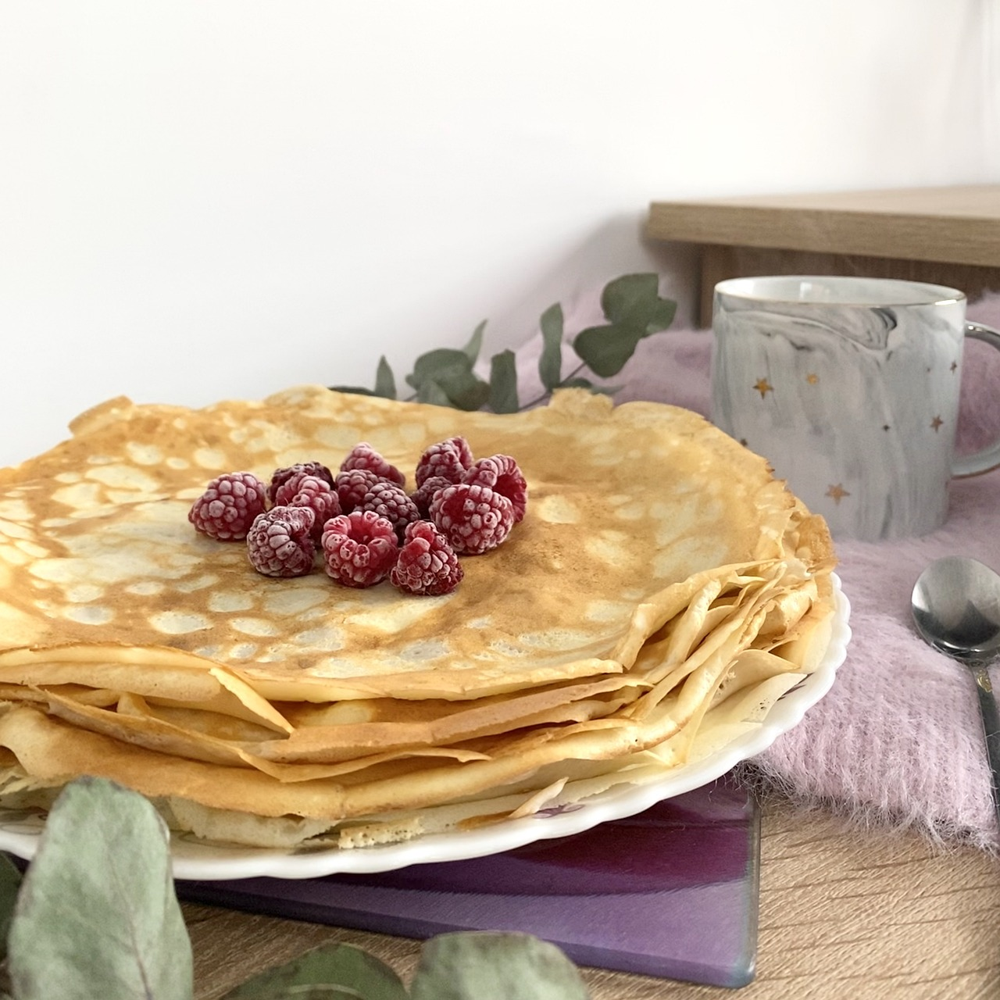

Pancakes
Pancakes are soft, fluffy rounds of cooked batter, typically made from a mixture of flour,
eggs, milk, baking powder, and a touch of sugar.
Golden-brown on the outside and tender on the inside,
they're often stacked high and served warm with a drizzle of syrup melting down the sides.
Their surface is slightly crisp at the edges, while the center stays light and airy.
Whether topped with butter, fresh berries, whipped cream, or chocolate chips,
pancakes are a comforting and versatile dish —
perfect for slow weekend mornings or cozy breakfast-for-dinner nights.
Each bite offers a gentle sweetness and a pillowy texture that feels like a hug for your taste buds.
Ingredients
- 180g of milk
- 130g of flour
- 15g sugar
- 12g of baking powder
- 2g salt
- 40g cooking oil
- 1 egg
Steps
- You mix together all of the dry ingredients first.
Crack the egg in and mix with with the dry ingredients.
Mix in the cooking oil and then the milk.
- Be careful with the milk and add just 2/3 first of the total volume and then the final third if needed
as this will vary depending on the day, altitude, and humidity.
If it's too thick, carefully add in a bit more milk.
If it's too thin and watery, you've basically gone crepe and add in a bit more flour and be careful with the milk next time.
- Mix it well, using a whisk (a spoon will not fluff things well enough)
but don't let it sit too long as the baking powder is active once mixed in.
- Use whatever kind of pan you prefer (I like cast iron, nonstick is fine too)
with butter for each pancake to get them nice and golden,
set somewhere around 6/10 on your range.
Pour out about two large tablespoons on a pan and cook that side until the batter starts to bubble.
Flip and let it cook to golden brown.
Remove and repeat until the batter is gone and that's it, pancakes!